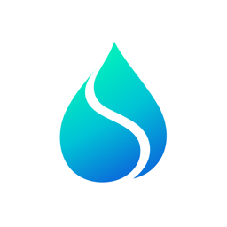

Suvia
Su içme hatırlatıcı · Water reminder
Gün boyu su içmeyi unutma.
Suvia, gün içinde ne kadar su içtiğini kaydetmeni ve belirlediğin aralıklarla hatırlatma almanı sağlar. Tamamen telefonunda çalışır: hesap, reklam ya da izleme yoktur.
Suvia helps you log how much water you drink and reminds you at the intervals you choose. It runs entirely on your phone — no account, no ads, no tracking.